Landscape animations
Models of landforms changing through time, built from airborne lidar for my Landforms course.
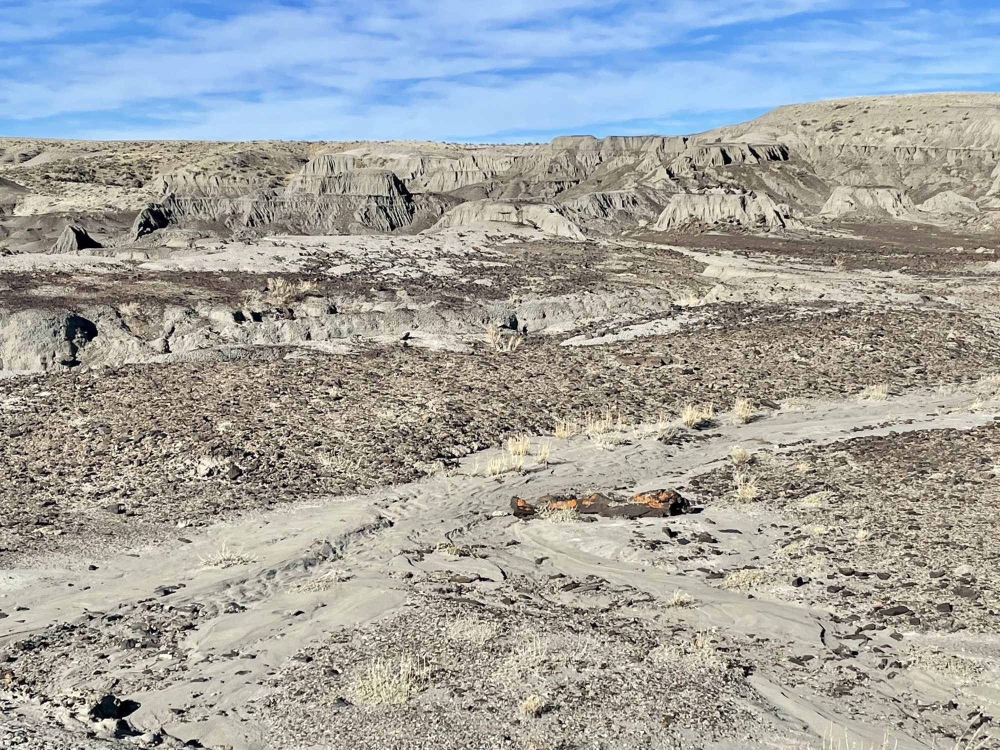
Courses
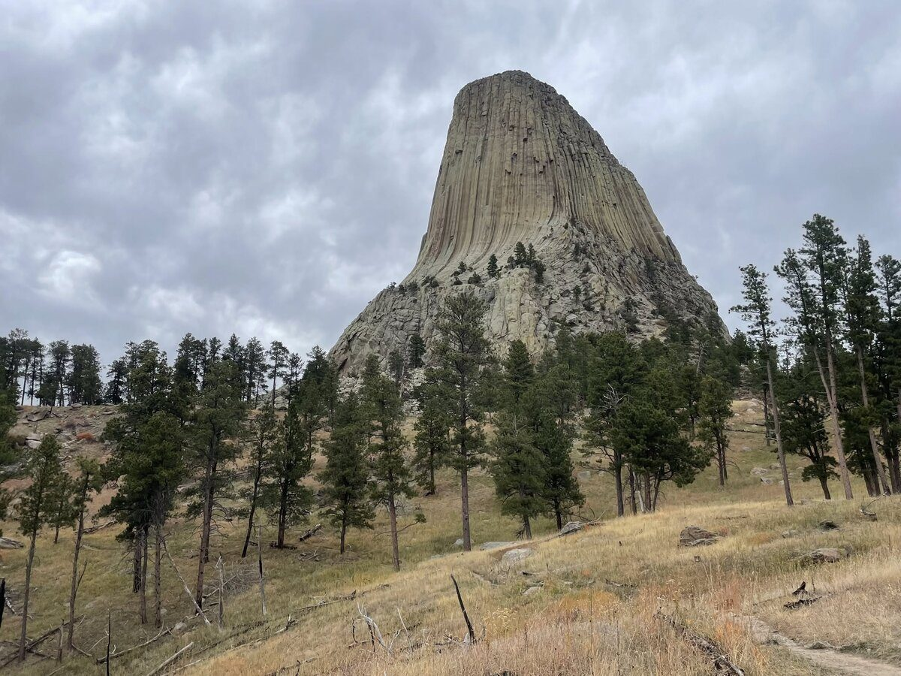
University of Memphis. Online, asynchronous. Built around case studies and testing explanations against evidence.
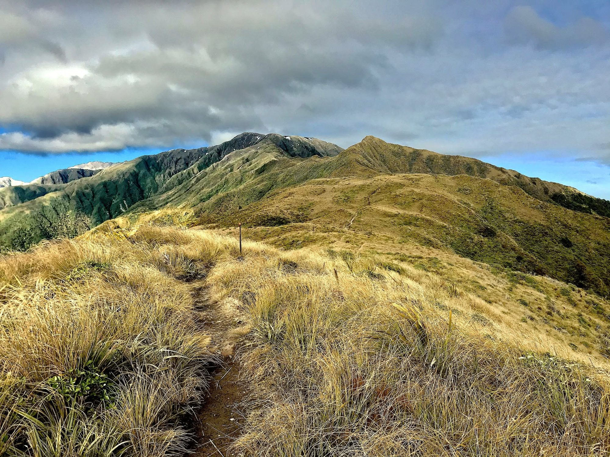
University of Memphis. Online. Simulation-based laboratories in three-dimensional landscapes built from lidar data.
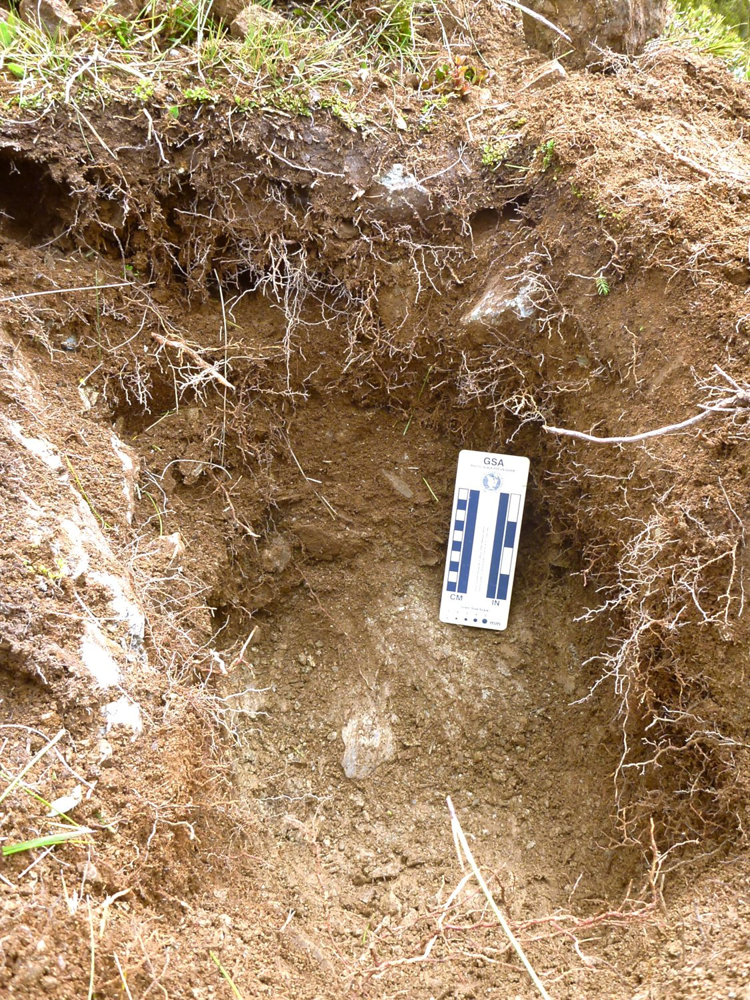
University of Memphis. Soil profile development and soil genesis, with field and laboratory work in soil mapping and taxonomy.
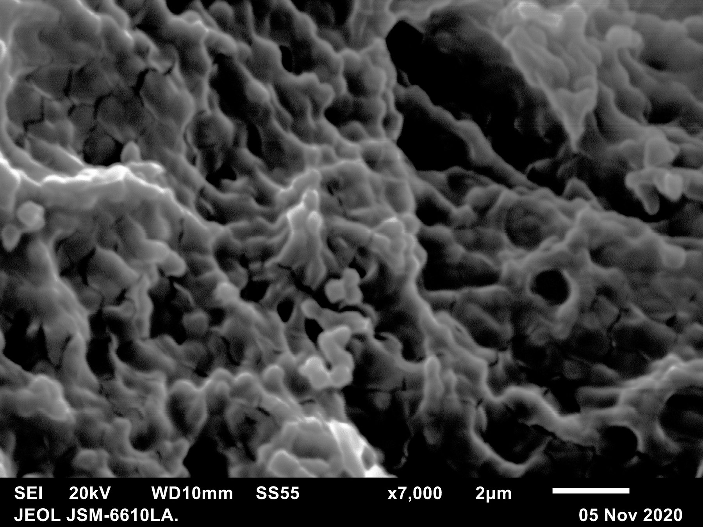
Lane College, 2023. An undergraduate course built on applying each concept to real problems.
Teaching philosophy
Students propose explanations, make predictions that can fail, and test them against evidence. I grade the reasoning, not recall.
Every concept is taught through a real problem with real data.
Online students measure and test in simulations built from real elevation and environmental data.
Introductory courses bring students into field work and research.
Models of landforms changing through time, built from airborne lidar for my Landforms course.
Teaching record
Teaching interests
Field photographs
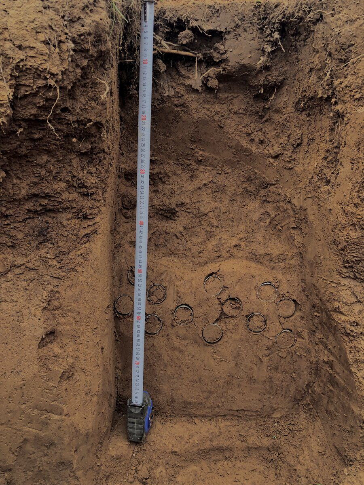
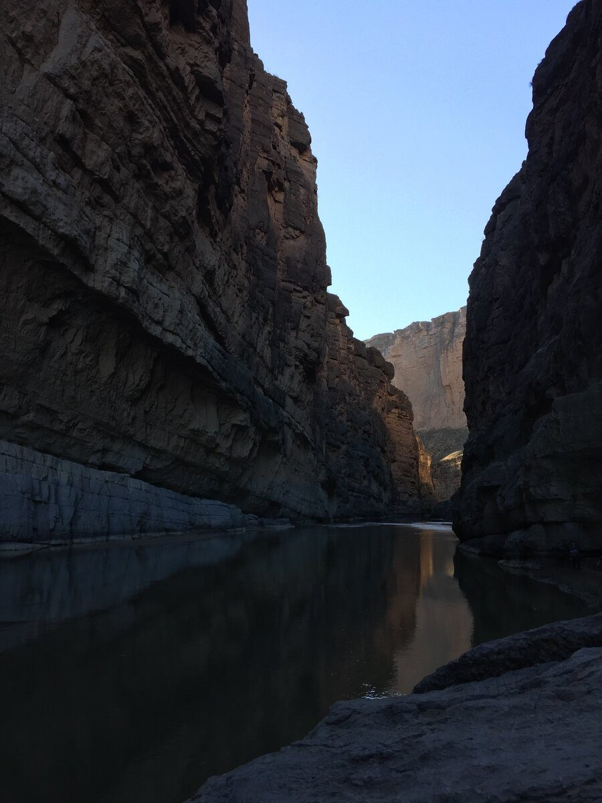
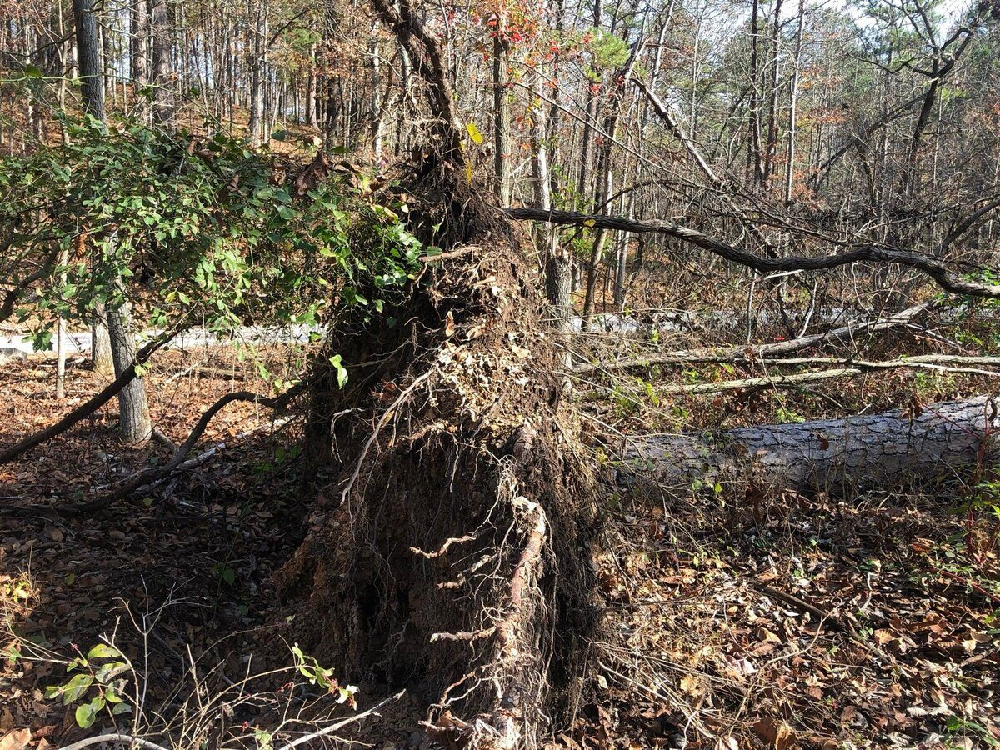
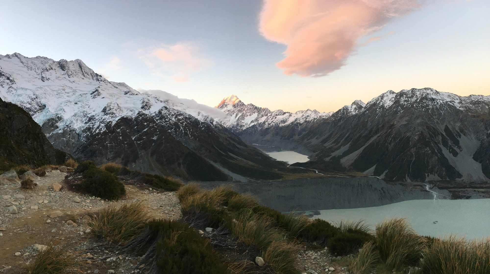
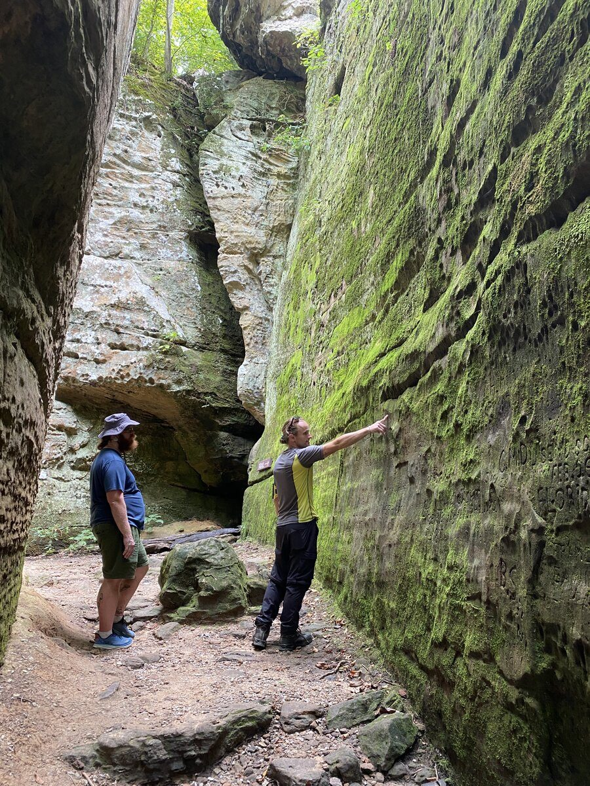
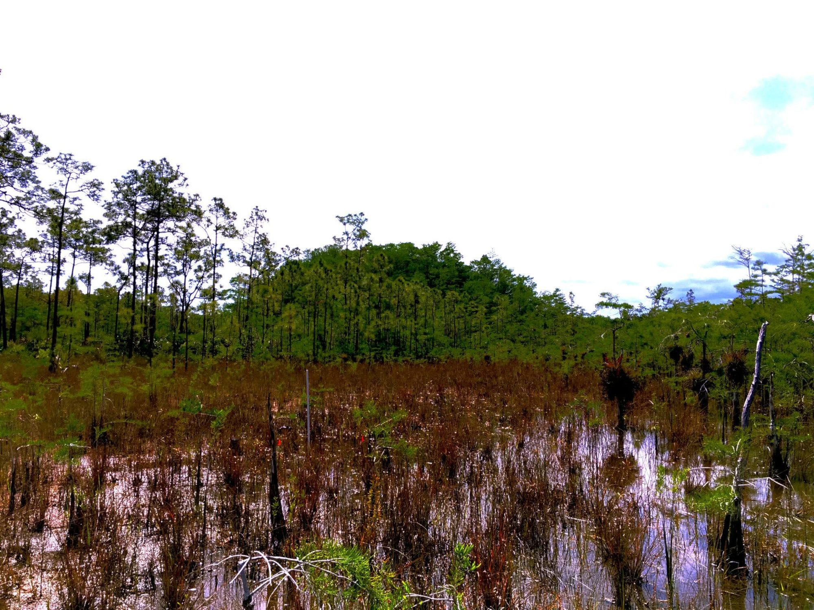
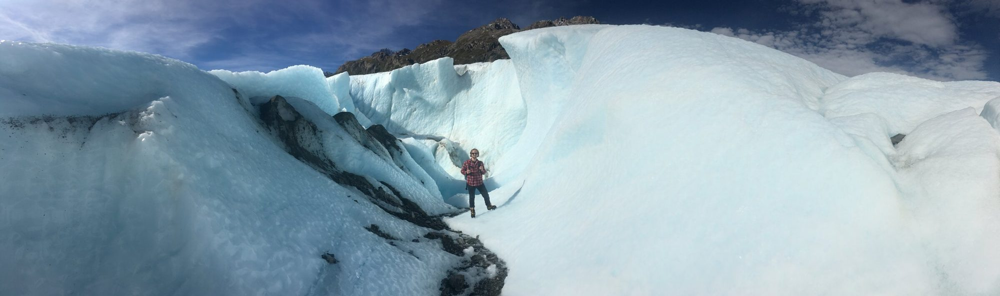
I study how life, water and rock interact to form soils and shape landscapes, combining field measurements, geochemistry and quantitative models.
Soil is where rock, water and life meet. In New Zealand's Tararua Range and Southern Alps, I study how greywacke rock breaks down into soil and the part living organisms play in that change. I combine soil chemistry, mineralogy and isotopes with models to follow what a soil loses, gains and moves as it forms.
Solves for the time and the loss and gain rates that reproduce the uranium-series activity ratios measured down a soil profile. Each run optimizes from random starting values, and 100 replicate runs give the spread of fitted times. Eight versions of the model are run.
Soil layers become networks of possible connections. Probability then weighs which flows the measurements support, for potassium and phosphorus.
Bulk density was not measured in every layer, so it is estimated from organic matter (loss on ignition at 550 °C) with a pedotransfer function developed for Chinese soils (Han et al., 2012). It was chosen because it outperformed the Prévost function when checked against published organic matter and bulk density values from New Zealand soils.
The cypress wetlands of Big Cypress National Preserve, Florida, move carbon and carbonate through water, plants and soil. I study how these wetlands store and release carbon, including the causes and consequences of marsh whitening.
A forest and the ground beneath it change together. My dynamic ecosystem model of the Congaree floodplain forest combines landscape evolution with ecosystem reconstruction to create proxies for past weather and climate.
Not every asteroid impact affects the atmosphere in the same way. Size, speed, angle and composition matter, and so does the rock the impactor strikes. I estimate the probability of different impacts over the past 542 million years, using a model of how the rocks at Earth's land surface have changed, and explore how their effects on the atmosphere link to extinction events.
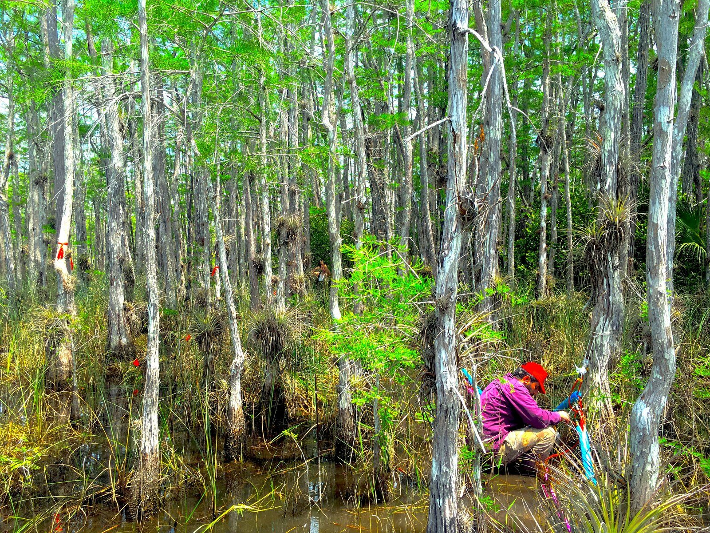
Earth scientist and educator.
Visiting Assistant Professor of Earth Sciences, University of Memphis. I study how rock becomes soil, and how living organisms take part in that process.
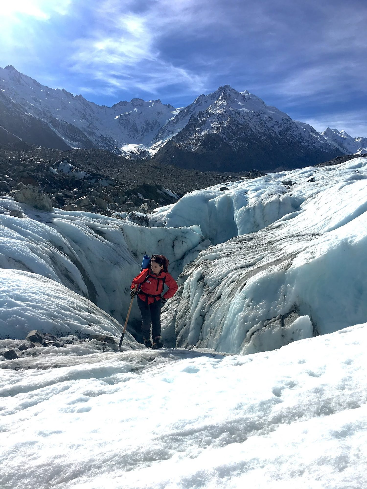
Contact
Table Top, New Zealand